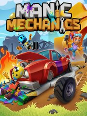

Manic Mechanics
Manic Mechanics
Detalles
|  | |
| Tiempo de juego | No Jugado |
| Última actividad | Nunca |
| Añadido | 31/07/2024 19:41:58 |
| Modificado | 31/07/2024 19:43:12 |
| Estado de finalización | Not Played |
| Librería | Steam |
| Fuente | Steam |
| Plataforma | PC (Windows) |
| Fecha de lanzamiento | 07/03/2024 |
| Puntuación de la Comunidad | 69 |
| Puntuación de la Crítica | 75 |
| Puntuación de usuario | |
| Género | Casual Indie Simulation |
| Desarrollador | 4J Studios |
| Editor | 4J Studios |
| Característica | Achievements Cloud Saves Co-Op Family Sharing Leaderboards Multi-Player Online Co-Op Online Pvp Partial Controller Support Pvp Remote Play Together Shared/Split Screen Shared/Split Screen Co-Op Shared/Split Screen Pvp Single Player |
| Enlaces | Punto de encuentro Discusiones Guías Noticias Página de la tienda PCGamingWiki Logros |
| Tag | 3D Action Agriculture Aliens Arcade Cartoony Casual Colorful Comedy Co-op Cute Destruction drama Driving family-friendly Funny Multiplayer PvP Simulation Stylized |
Descripción
It’s time to dust off your overalls and hitch on your toolbelt in Manic Mechanics – a chaotic couch co-op game where you and up to three fellow grease monkeys pay a visit to the car-obsessed Octane Isle.
Your mission? Work your way around the island’s six neighbourhoods – from the rust buckets of Betty’s Scrapyard to the spooky shores of Banshee Bay – challenging the Master Mechanics that rule each part of town. Repair as many cars, trucks, choppers, tractors, mini-subs (and even UFOs) as possible to prove your worth in this hectic race against the clock.

No two games are the same as you work your way through 40 unique garage levels, each one more challenging than the last. Completing a garage is one thing, but mastering it and beating your best score requires coordination, skill and determination.

Octane Isle is a great place to visit, whether you go solo or bring along your friends. In co-op mode, up to four players work together as a finely-tuned machine, tracking their team’s best scores, unlocking new characters and discovering hidden secrets as they explore Octane Isle together. Or maybe you'll choose to head straight to the Versus Arena, split into teams and decide once and for all which crew truly rules the workshop? Whether you choose co-op or competitive, the action unfolds across local, wireless and online play.

Just about anything can happen on Octane Isle... the faster you work, the more chaos is unleashed. Fuel ignites, tyres explode, robots short-circuit, cows stampede and aliens abduct, but with teamwork, skill - and maybe just a little luck - you'll earn the right to call yourselves a Manic Mechanic!
Features
Your mission? Work your way around the island’s six neighbourhoods – from the rust buckets of Betty’s Scrapyard to the spooky shores of Banshee Bay – challenging the Master Mechanics that rule each part of town. Repair as many cars, trucks, choppers, tractors, mini-subs (and even UFOs) as possible to prove your worth in this hectic race against the clock.
No two games are the same as you work your way through 40 unique garage levels, each one more challenging than the last. Completing a garage is one thing, but mastering it and beating your best score requires coordination, skill and determination.
Octane Isle is a great place to visit, whether you go solo or bring along your friends. In co-op mode, up to four players work together as a finely-tuned machine, tracking their team’s best scores, unlocking new characters and discovering hidden secrets as they explore Octane Isle together. Or maybe you'll choose to head straight to the Versus Arena, split into teams and decide once and for all which crew truly rules the workshop? Whether you choose co-op or competitive, the action unfolds across local, wireless and online play.
Just about anything can happen on Octane Isle... the faster you work, the more chaos is unleashed. Fuel ignites, tyres explode, robots short-circuit, cows stampede and aliens abduct, but with teamwork, skill - and maybe just a little luck - you'll earn the right to call yourselves a Manic Mechanic!
Features
- Manic arcade action
- 40 levels
- Six unique neighbourhoods
- Local and online couch co-op
- Local and online versus mode